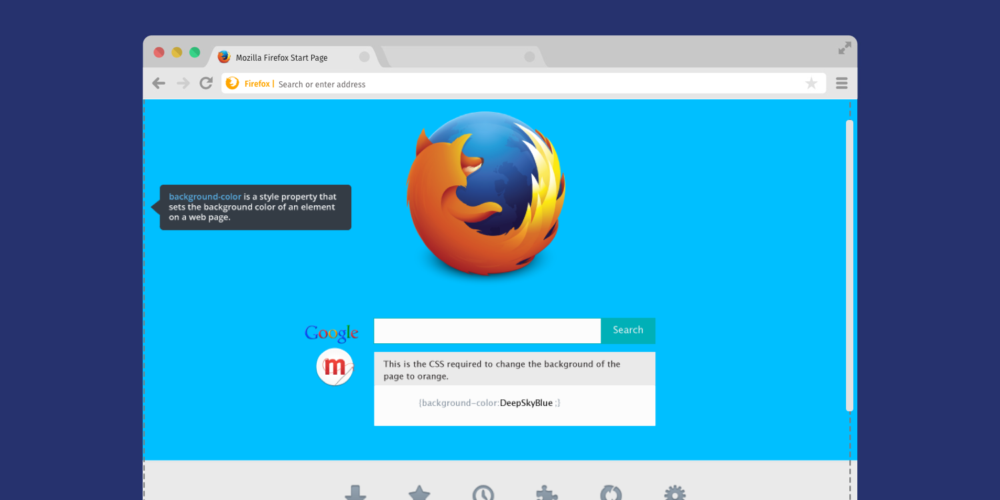

Good design should support mentorship
Hack Firefox
Watch demo
Read the blogpost
“Millions of people visit the Firefox website daily, so this was a rare opportunity to teach about coding within that context. It was surprisingly challenging because I had to balance having a learning objective of teaching CSS with the fact that I couldn't get too technical on such a widely accessed page.
”
Challenge
Teach a browser website visitor about CSS within a 30 second page visit.
Engagement strategy
I was tasked with using this real estate to promote Maker Party, Mozilla’s global campaign to “teach the web”, uniting educators, organizations and enthusiastic web users with hands-on learning and making. I saw this as an interesting opportunity for Mozilla to show (vs. tell) what Maker Party is all about.
Design strategy
I chose a clean and simple learning objective of having users change the background color of the webpage.
Solution
We launched the snippet (the little piece of interactive copy underneath the search bar) with this micro baked in lesson. Many people discussed it and were eventually converted into Maker Party attendees by signing up through the associated landing page.
Process
I iterated a ton on trying to get this interaction as minimal as possible. This was the first time that Firefox had ever used that real estate for something truly interactive so we had a lot of creative freedom (although internal skepticism) and some clear constraints to ensure that the interaction didn’t consume processing speed.
